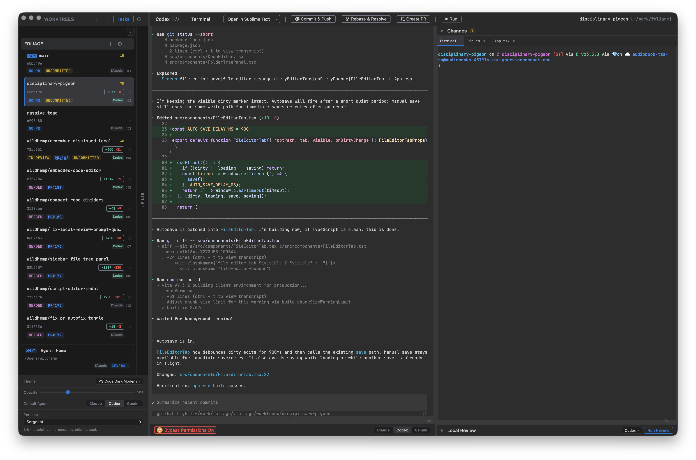

Foliage is a desktop app that gives each coding task its own git worktree, agent session, and terminals. Work on a feature, a bug fix, and an experiment at the same time, with a separate branch and working directory for each.
Run Claude Code, Codex, Gemini CLI, or Devin CLI using the tools and accounts you already have. Follow their progress, explore the code, preview your app, and review changes in one place.

All platforms:
Or install with Homebrew (macOS & Linux):
brew tap wildhemp/foliage && brew install --cask foliage
Keep the whole task in view, from the first prompt to the pull request. Each worktree brings together your agent, terminals, files, and review tools so you can pick up where you left off.
Give each task its own branch and working directory, with an independent agent session. Switch between tasks while other agents keep working, and see change counts and PR status in the sidebar.
Run Claude Code, Codex, Gemini CLI, or Devin CLI in real terminals. Choose a different agent for each worktree and use your existing CLI installation and sign-in.
Keep a shell for tests, another for your dev server, and your agent alongside them. Multiple terminal tabs let you run commands in the selected worktree without interrupting the agent.
Browse files and edit them in tabs with syntax highlighting and change markers. Jump to definitions, find references and implementations, and hover for documentation with a supported language server.
Review changes in split or unified views and browse changed files as a directory tree. Open a diffed file directly in the editor when you want to inspect the surrounding code or make an adjustment.
Preview a local dev server or open a page beside your code. Browser tabs, an address bar, back and forward navigation, and an option to open the current page externally keep previews close to the task.
Run an AI review and read structured findings in a dedicated panel. Inspect feedback alongside your changes before moving on to the pull request.